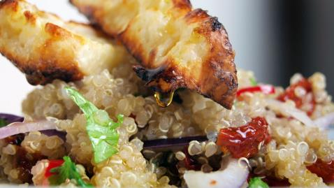

Quinoa and Halloumi Salad
Nutritional Facts (per serving)
Calories
587.5
Calories 587.5 | Total Fat 47.2g | Saturated Fat 20.9g | Carbohydrates 20.3g | Fibre 2.7g | Protein 24.2g
Serves: 2
Ingredients
- 6 sun dried tomatoes
- 3 tbsp. olive oil
- 1 small red onion, thinly sliced
- 2 tsp. red wine vinegar
- 5g ground cumin
- 200g sliced halloumi
- 85g quinoa
Method
Step 1: Cook the quinoa according to the instructions on the packet, drain well and place into a bowl.
Step 2: Add the cumin, red onion, red wine vinegar, sun roasted tomatoes and olive oil.
Step 3: Cook the halloumi in a griddle pan until it is soft, this should take around 3-4 minutes.
Step 4: Place the halloumi on top of the quinoa on a plate, serve immediately and tuck in.